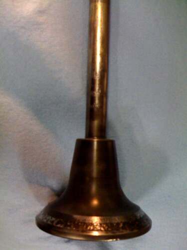

2008 Week 33 in Review
August 10 to August 16, 2008
Here's this week's cruising schedule aboard Catalyst, from Petersburg to Juneau:
Sunday, Aug. 10 - Petersburg to Scenery Cove: Depart Petersburg, Hike Baird glacier (cloudy)
Monday, Aug. 11 - Scenery Cove to Donkey Bay: Bubble netting whales, Kayak Donkey Bay Estuary, meet Norio (rain)
Tuesday, Aug. 12 - Donkey Bay to Windham Bay: Brother's Beach walk, explore Windham Bay gold mine, find gold (rain)
Wednesday, Aug. 13 - Windham Bay to Ford's Terror: Fishing and Kayaking at Windham, Orcas, Set crab pots (rain)
Thursday, Aug. 14 - Ford's Terror to Ford's Terror: incredible glacier day, narrows paddle, uplands walk, skiff rides (no rain!?)
Friday, Aug. 15 - Ford's Terror to Limestone Inlet: whales, crab vortex, salmon in river, beach walk, slide show (sunny & calm)
Saturday, Aug. 16 - Limestone Inlet to Juneau: pack and return to what passes for civilization (but is really a hollow illusion)
Here's the crew:
And here're the passengers:
We explored a mine, watched whales bubble-net feeding, played some good pranks, and "ate Alaska." Good times.
Eating Alaska
Like a lot of the charter boats in southeast Alaska, food is a big part of cruising on the Catalyst. Chef Anne Catherine and others whip up amazing meals for passengers and crew. It would be easy to sit back and let Anne Catherine do all the work, but I like to encourage the passengers to do some good collecting and foraging, too. I call this "eating Alaska."
There is a lot of wild food in Alaska there for the taking (with the appropriate permits, of course), from blueberries to halibut to Dungeness crab. We get passengers with all different experience levels, so some of them I just hand a trap, and others I really teach how to fish. We eat some of it right off the beach or grill it on the fantail, but sometimes it's fun to make something a little fancier, like sushi.
On this trip, we had a big sushi party in the Catalyst's mess:
We had Sakhalin sole and smoked salmon and limpets and shrimp, veggies and bull kelp, plus wasabi and nori and omelet and tofu and seasoned rice. We made lots of different kinds and had a lot of fun. We made miso, too, for the full experience:
Eating Alaska is definitely one of my favorite parts about shipping out.
Business as usual
I got some good work in on the engine this week: I adjusted the clutch, changed all the pyrometers for better gages, and worked on the valves in cylinder three. While underway, I kept hearing an intermittent sticking-valve sound coming from number three cylinder head. When I pulled its valve cages, the exhaust valve was in bad shape so I pulled it out. I've been looking at it, and the part that worries me is the stem damage:

The face can be cleaned up, but the stem damage might condemn the valve. After I pulled out the valve, I cleaned everything, installed a spare valve in the cage, performed the kerplunk test, ran it a few minutes, and then tightened it a little more.
We're also still overloading the engine a bit. The Catalyst's propeller is oversized for her engine, making the engine work too hard. The new pyrometers are showing that the exhaust temperatures are well over 700 degrees at cruising speed (Dan recommends 600 degrees for a caged un-cooled valve). I started reining in the running practices and am making a list for Bill of the options for making the engine run better:
* re-pitch the prop
* add a keel cooler, which would eliminate the need for the seawater pump
* reduce electrical load and add a 12-volt charger to replace the 12-volt alternator
* remove hydraulic controls and steering, which would remove a large parasitic load
* re-ring pistons, grind valves, service injectors, a tune-up that would increase the power available
The Washington manual states in several places not to overload the engine, but acknowledges the tendency to do so since a heavy-duty is very forgiving and can easily carry large loads. This is often difficult to explain to captains because the size of the engine compared to the available horsepower dose not equate to those used to size modern engines. It's easy to assume that parasitic loads on the engine don't make a difference, but, in fact, parasitic loads (using the engine's power to run more than just the propeller) can drain lots of power and make the engine overload pretty easily.
On Catalyst, there's six parasitic loads that draw 1 to 3 horsepower each: the fresh water pump, the seawater pump, the 12-volt alternator, the 24-volt alternator, the hydraulic pump, and the clutch-in hydraulic pump, which all run on a jack shaft and belts. All together, these take a big bite out of the 120 horsepower that the engine produces when it runs at 450 rpm. Now that we've reduced the cruising speed down to 350 rpm, we've gotten the average pyro reading down to 600 degrees, which is much better for the engine.
A lesson in applied physics
Confused by all that? Let us consider the power produced by a diesel engine curve and the power required for hull-speed curve.
Diesel engines are designed to run at a certain speed. Re-engineering them by machining or by imagination is never a good idea. The recommended running speed that allows the engine to produce the most horsepower with the least engine wear is the speed at which:
* the pistons reach their designed feet-per-minute
* the firing pressures are just below the limit
* the exhaust temperatures are just below their limit
If you try to cruise at above or below that recommended speed, you will probably "lug" or overload the engine, because you'll be trying to get it to run faster or with a heavier load than it's designed to. This causes high firing pressure, soot build-up, burned valves, and actually wears all parts on the engine much more quickly than at recommended running speed.
One of the easiest ways to overload an engine is to try to make the boat go faster than it's designed to. Boats are designed to cruise at a designated speed at which the boat goes as fast as it can without pushing too much water with the bow. This follows a specific formula, in which hull speed is equal to the square root of the length of the hull at the water line. A displacement hull can't exceed the speed determined by that equation without severely straining the engine and getting really, really inefficient. There are a lot of other factors involved in the potential speed of a boat, but the two main ones are hull and engine and until those are properly balanced the other ones aren't a big deal.
Anyway, as a boat accelerates, it needs more and more power to maintain its speed. Let's say our boat uses 65 horsepower to go 7 knots per hour, 80 horsepower to go 7.5 knots, 100 horsepower to go 8 knots, 125 horsepower to go 8.5 knots, and 175 horsepower to go 9 knots, and hull speed is 9.5 using 250+ horsepower to maintain that speed. The horsepower required keeps going up because it has to push more water in front of it.
Now, it's important (except for tugs - we'll talk about that later) to have the engine operating at peak performance at the speed the boat is designed for. This is not necessarily hull speed, although it can be. I recommend cruising at a speed less than hull speed to save fuel, ideally just before the horsepower-required curve starts to climb quickly. In our example boat, I would say that 8.5 is a good cruising speed, because to go just one knot faster you need to burn twice as much fuel and use twice as much horsepower.
Why are tugs excluded from this? They are designed differently than cruising vessels - they're built to tow much more than their own weight, which changes the relationship between hull and engine. For those of you with tugs, you may never reach your engine's full power even cruising at hull speed. Some tugs used as yachts re-pitch their wheels to get a little more speed, but it's pretty scary to idle at 6 knots. Tugs should be opened up often to warm up the engine a bit, but you don't need to worry about overloading. Once in a while, just for fun, you can put the bow against a sturdy pier and rev it up to so that the engine actually works for a while.
OTM Inc Weekly eBay Auction
We're open for business even while I'm in Alaska! The Old Tacoma Marine Inc inventory has been moved to a remote off-site location for easier shipping and processing:
This week's object for sale is a Cleveland Air Shifter: